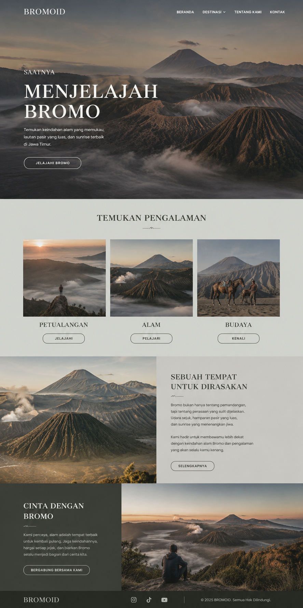

WHAT DO I DO?
Web Development
Design and develop responsive websites by combining structured code with thoughtful user interface design. I focus on building systems that are not only functional, but also intuitive, efficient, and easy to use across different devices and user needs.


Graphic Design
Create visual designs and digital assets, including branding, layouts, and visual concepts that communicate ideas clearly. I aim to balance aesthetics and purpose, ensuring every design has both visual impact and meaningful direction.
System & Workflow Analysis
Analyze, plan, and improve system workflows by understanding how data and processes interact. I focus on creating logical, well-structured solutions that enhance usability, optimize performance, and simplify complex processes.